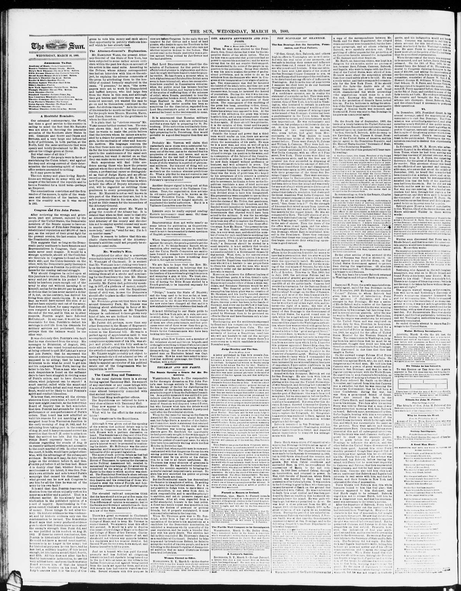

The Scandals of Grantism.Los escándalos del grantismo.
The Sun. New York [N.Y.], March 10, 1880. Page 2. Published by Benj. H. Day. A daily newspaper, 1833–1916.The Sun. New York [N.Y.], 10 de marzo de 1880. Página 2. Publicado por Benj. H. Day. Periódico diario, 1833–1916. View the originalVer el original

According to the newspaper, deposed Dominican President Buenaventura Báez partnered with promoters of the Great San Domingo Copper Company to raise money from investors by falsely claiming General Grant was involved. After distributing stock to Washington officials and raising $200,000—part of which funded camels for the mines—the adventurers fled to San Domingo, where Báez regained the presidency and resumed swindling operations, including granting a coal mine concession to Edward H. Routmont in exchange for a loan from a London firm.Según el periódico, el depuesto mandatario dominicano Buenaventura Báez coludió con los promotores de la Great San Domingo Copper Company para embaucar a inversionistas fingiendo la connivencia del general Grant. Tras repartir acciones entre dignatarios de Washington y recaudar 200.000 dólares —parte de los cuales sufragó la importación de camellos para las minas—, los especuladores huyeron a Santo Domingo, donde Báez recuperó la presidencia y reanudó sus maniobras fraudulentas, incluyendo la concesión carbonífera otorgada a Edward H. Routmont a cambio de un empréstito con una casa londinense.
FULL TEXT:TEXTO COMPLETO:
THE SCANDALS OF GRANTISM.LOS ESCÁNDALOS DEL GRANTISMO.
The San Domingo Job—Its Inception, Prosecution, and Final Failure.El negocio de Santo Domingo—Su inicio, prosecución y fracaso final.
I.I.
“If Gen. Grant, Gen. Babcock, and others high in office in Washington are so well satisfied with the real value of our prospects, and feel safe in lending their names and influence to carry them out, I cannot for the life of me see why you should hesitate. It was our intention to have sent 1,200 shares of the stock of the San Domingo Copper Company to you, as soon as Knapp shall have signed the certificates, to be distributed among officials of influence in Washington. But from the tone of your letters I suppose we shall have to do our business through some other party.”«Si el general Grant, el general Babcock, y otros altos en cargos en Washington están tan bien satisfechos con el valor real de nuestras perspectivas, y se sienten seguros al prestar sus nombres e influencia para llevarlas a cabo, no puedo por mi vida ver por qué usted debería vacilar. Era nuestra intención haber enviado 1,200 acciones de la Compañía de Cobre de Santo Domingo a usted, tan pronto como Knapp haya firmado los certificados, para ser distribuidas entre oficiales de influencia en Washington. Pero por el tono de sus cartas supongo que tendremos que hacer nuestro negocio a través de alguna otra parte.»
These words, which seem like the idle boast of a confidence operator, are in reality the statement of a scandalous fact. They were written on the 21st of December, 1866, by Joseph W. Currier, then of New York, to a friend in Washington, who hesitated to embark in a scheme which looked to the raising of a million of dollars for the avowed purpose of mining copper in the island of San Domingo. Currier had been a quartermaster in the Union Army. He was speculative by nature, and circumstances made him impecunious. He was enthusiastic and credulous, but perhaps not deliberately dishonest. At this time, however, he was in the clutches of two unscrupulous knaves, who, years before, had gone from Massachusetts to the West Indies to teach the Dominicans tricks of which they never dreamt before. These were Joseph W. Fabens and William L. Cazneau. They were both natives of the Bay State. In 1863, Fabens, Cazneau, and Currier established the Great American West India Company, with an office at 5 Pine street, New York. Their rooms were fitted up in sumptuous style, and by the free use of printers’ ink they succeeded in disposing of their worthless stock to the amount of $160,000. Then they closed their doors and disappeared. But they came again in 1866, scattering far and wide their prospectus of the Great San Domingo Copper Company. They were accompanied this time by Buenaventura Baez, the deposed President of the Dominican Republic, who had been driven from the island and was ready for any sort of a job which promised him a good living without work. These conspirators explained that Cabral’s revolution had destroyed the Great American West India Company, but that the present corporation rested on a secure basis. To all doubting inquirers they whispered, “Gen. Grant is in it!” On the strength of his name they raised money from investors. Fabens took $30,000 and started for Africa to buy camels for the copper mines. He was accompanied by Baez. The 1,200 shares of stock were duly distributed among “officials of influence in Washington,” and $200,000 was raised by the sale of shares. Then the doors of the office were closed again, and the adventurers sought safety in flight. They returned to San Domingo, where Baez reëstablished himself in the Presidency. There they remained till President Grant was inaugurated, and then they began once more their swindling operations in good earnest.Estas palabras, que parecen la jactancia ociosa de un operador de confianza, son en realidad la declaración de un hecho escandaloso. Fueron escritas el 21 de diciembre de 1866, por Joseph W. Currier, entonces de Nueva York, a un amigo en Washington, quien vacilaba en embarcarse en un plan que miraba a recaudar un millón de dólares con el propósito declarado de explotar cobre en la isla de Santo Domingo. Currier había sido intendente en el Ejército de la Unión. Era especulativo por naturaleza, y las circunstancias lo hicieron menesteroso. Era entusiasta y crédulo, pero quizás no deliberadamente deshonesto. En este momento, sin embargo, estaba en las garras de dos bribones sin escrúpulos, quienes, años antes, habían ido desde Massachusetts a las Indias Occidentales para enseñar a los dominicanos trucos de los que nunca soñaron antes. Estos eran Joseph W. Fabens y William L. Cazneau. Ambos eran nativos del Estado de la Bahía. En 1863, Fabens, Cazneau y Currier establecieron la Gran Compañía Americana de las Indias Occidentales, con una oficina en el número 5 de la calle Pine, Nueva York. Sus habitaciones fueron acondicionadas con estilo suntuoso, y mediante el libre uso de tinta de imprenta lograron disponer de sus acciones sin valor hasta la cantidad de $160,000. Entonces cerraron sus puertas y desaparecieron. Pero vinieron de nuevo en 1866, esparciendo por todas partes su prospecto de la Gran Compañía de Cobre de Santo Domingo. Fueron acompañados esta vez por Buenaventura Báez, el depuesto Presidente de la República Dominicana, quien había sido expulsado de la isla y estaba listo para cualquier clase de negocio que le prometiera una buena vida sin trabajo. Estos conspiradores explicaron que la revolución de Cabral había destruido la Gran Compañía Americana de las Indias Occidentales, pero que la presente corporación descansaba sobre una base segura. A todos los inquisidores dudosos les susurraban: «¡El general Grant está en ello!» Sobre la fuerza de su nombre recaudaron dinero de los inversionistas. Fabens tomó $30,000 y partió hacia África para comprar camellos para las minas de cobre. Fue acompañado por Báez. Las 1,200 acciones fueron debidamente distribuidas entre «oficiales de influencia en Washington», y se recaudaron $200,000 por la venta de acciones. Entonces las puertas de la oficina fueron cerradas de nuevo, y los aventureros buscaron seguridad en la huida. Regresaron a Santo Domingo, donde Báez se restableció en la Presidencia. Allí permanecieron hasta que el presidente Grant fue inaugurado, y entonces comenzaron una vez más sus operaciones de estafa en serio.
This collection gathers the coverage of the Dominican Republic in the American press, in the order it was published.Esta colección reúne la cobertura de la República Dominicana en la prensa estadounidense, en el orden en que se publicaron.